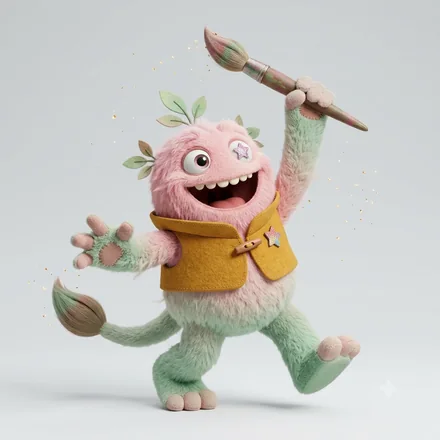

monster type
ENTP-O-H迷いを楽しむ突破モンスター
前提をひっくり返して、可能性を試す人
モンスター名は、6軸の組み合わせにつけた分類名です。軸ごとの表現ではありません。
ENTP-O-H とは
ENTP-O-H（ENTP-OH／ENTP OH とも書かれます）は、64タイプ性格診断のうちの1つです。ENTPの4文字に、自分への確信を表すO（揺らぎ）と、人への構えを表すH（信頼）が重なります。64モンスターズでは「迷いを楽しむ突破モンスター」と呼んでいます。
「そもそも、こうしたらどうか」と切り込むのが得意です。着想が次々に湧き、議論のなかで思考が加速します。飽きが早く、始めることと続けることの落差が課題になりやすいタイプです。
あれこれ試しながら、人と一緒に考えることを好むタイプ。決めたあとも「別の手があるかも」と戻ってこられる柔らかさがあり、相手の案も素直に取り込みます。面白がる力が強く場は温まりますが、選択肢が増え続けて、どこにも着地しないまま時間が過ぎることがあります。
ENTP-O-H はこんな人
実在の人物ではなく、よく見かける役割と場面で書いています。
- 一緒に考えることそのものを、面白がれる人
- 決めたあとでも「別の手があるかも」と戻ってこられる人
- 選択肢が増え続けて、着地しないまま時間が過ぎる人
ENTP-O-H あるある
- 案が三つに絞れず、いつも七つある
- 人の案を素直に取り込むので、元の案が原形をとどめない
- 「もう少し考えたい」が積み重なる
- 締め切りを人に宣言したときだけ、ちゃんと終わる
- 決めたことを、翌週にもう一度考え直している
当たっているかどうかは、実際に受けてみるのがいちばん早いです。
4つのサブタイプの中での位置
 ENTP-A-H場を焚きつける突破モンスター
ENTP-A-H場を焚きつける突破モンスター ENTP-A-C斬り込む突破モンスターENTP-O-H迷いを楽しむ突破モンスター
ENTP-A-C斬り込む突破モンスターENTP-O-H迷いを楽しむ突破モンスター ENTP-O-C静かに企てる突破モンスター
ENTP-O-C静かに企てる突破モンスター同じ基本タイプでも、自分への確信（A / O）と人への構え（H / C）で現れ方が変わります。
強みと、気をつけたいところ
ここは基本タイプ（ENTP）に共通する性質です。
強み
- 常識の外側から選択肢を持ち込める
- 会話の場で瞬時に組み立て直せる
- 失敗を実験として扱える
気をつけたいところ
- 手をつけた案件が並行して増える
- 相手の反論を面白がりすぎて、摩擦になる
- 細部の詰めと運用が苦手
ENTP-O-H ならでは
このタイプの強み
自分の案に固執しないので、人の意見が混ざるほど中身が良くなる。共同作業でいちばん力が出るENTPです。
落とし穴
「もう少し考えたい」が積み重なって、決めどきを逃す。案を3つに絞る、期限を人に宣言する——外から締め切りを借りるのが効きます。
恋愛での ENTP-O-H
相手といる時間そのものが面白くて、関係をどうするかは後回しになります。悪気なく、決めないまま続きます。
かみ合う相手
決める役を引き受けてくれる相手。方向を出してくれる人となら、この人の面白さが全部生きます。
気をつけたいところ
楽しいまま何も決まらないと、相手だけが不安になる。次の一段だけは先に決めてしまうのが効きます。
仕事での適性
力を発揮する環境
新しいことを試せて、変化が歓迎される環境
向いている役割
新規事業、企画、突破口づくり、対外交渉
アイデアの発散と関係づくりが得意。案を3つに絞る癖をつけると前進する。
相性
恋人・仕事・友人で、噛み合う相手は変わります。6軸の重みづけから計算した順位です。数字は測定値ではありません。
恋人としてかみ合う相手
ENTP-A-H場を焚きつける突破モンスター100 ESTP-A-H懐に飛び込む瞬発モンスター88
ESTP-A-H懐に飛び込む瞬発モンスター88 INTP-A-H語りたがる分解モンスター88ENTP-O-H同じタイプ迷いを楽しむ突破モンスター88
INTP-A-H語りたがる分解モンスター88ENTP-O-H同じタイプ迷いを楽しむ突破モンスター88 ENFP-A-H火を放つ火つけモンスター81
ENFP-A-H火を放つ火つけモンスター81この用途では「外界への構えが同じ」と「判断の基準が同じ」ことを最も重く見ています。
仕事のパートナーとして組みやすい相手

ISFP-A-Hのびやかな感性モンスター100 ESFP-A-H太陽のようなお祭りモンスター93
ESFP-A-H太陽のようなお祭りモンスター93 ISTP-A-H人懐こい手さばきモンスター86
ISTP-A-H人懐こい手さばきモンスター86 ISFP-A-C静謐な感性モンスター86ESTP-A-H懐に飛び込む瞬発モンスター79
ISFP-A-C静謐な感性モンスター86ESTP-A-H懐に飛び込む瞬発モンスター79この用途では「情報の受け取り方が違う」と「外界への構えが同じ」ことを最も重く見ています。
友人として続きやすい相手
ENFP-A-H火を放つ火つけモンスター100ENTP-A-H場を焚きつける突破モンスター92 ENFP-O-H揺れる火つけモンスター92
ENFP-O-H揺れる火つけモンスター92 ENFJ-A-H人を惹きつける伴走モンスター92ENTP-O-H同じタイプ迷いを楽しむ突破モンスター83
ENFJ-A-H人を惹きつける伴走モンスター92ENTP-O-H同じタイプ迷いを楽しむ突破モンスター83この用途では「情報の受け取り方が同じ」と「エネルギーの向きが同じ」ことを最も重く見ています。
よくある質問
ENTP-O-Hとはどんなタイプですか？
ENTP-O-Hは「迷いを楽しむ突破モンスター」です。前提をひっくり返して、可能性を試す人というENTPの性質に、自分への確信がO（揺らぎ）、人への構えがH（信頼）の組み合わせが重なります。あれこれ試しながら、人と一緒に考えることを好むタイプ。決めたあとも「別の手があるかも」と戻ってこられる柔らかさがあり、相手の案も素直に取り込みます。面白がる力が強く場は温まりますが、選択肢が増え続けて、どこにも着地しないまま時間が過ぎることがあります。
ENTP-O-Hと相性がいいタイプは？
用途によって変わります。恋人として噛み合うのはENTP-A-H、ESTP-A-H、INTP-A-H、仕事のパートナーとしてはISFP-A-H、ESFP-A-H、ISTP-A-H、友人としてはENFP-A-H、ENTP-A-H、ENFP-O-Hが上位です。6つの軸それぞれに「一致が効くか、違いが効くか」を用途別に重みづけして、64タイプを順位づけしています。同じタイプ同士も相手として数えています。
ENTP-O-Hの「O」と「H」は何を表していますか？
Oは自分への確信の軸で、揺らぎ＝決めたあとも考え直し、揺れながら精度を上げるという意味です。Hは人への構えの軸で、信頼＝まず信じて、自分から開いていくという意味です。同じENTPでも、この2文字が変わると現れ方が変わります。
ENTP-O-Hは「ENTP-OH」や「ENTP OH」と同じですか？
同じものです。ENTP-O-H・ENTP-OH・ENTP OH・ENTP O H は、いずれも同じ組み合わせを指します。区切り方はサービスや記事によって異なります。
この診断は、回答時点での自己認識を6つの軸で整理したものです。人の性格は状況や時期によって変わります。
© 2026 WONDER BROTHERS INC. All rights reserved.